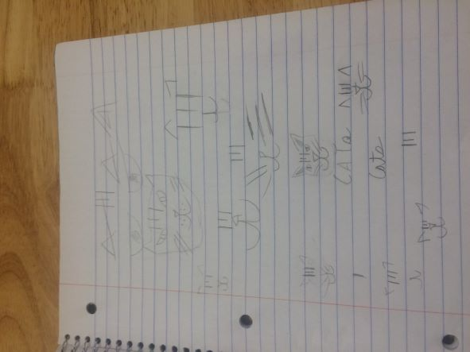
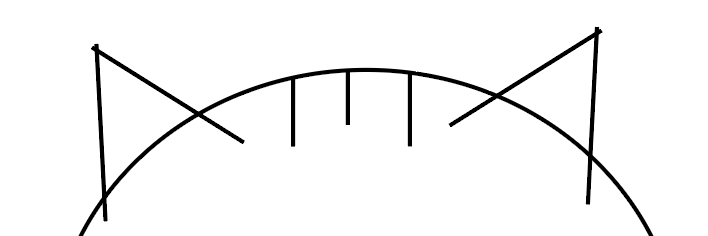

I didn't really choose a theme for this project, it was more of taking things that I like and making a design that worked from that. I chose to do a line drawing of a cat because I've always had a cat in my life. I chose the color black because it shows up well on different colored fabrics. I chose dark blue because it is my favorite color.
because It's my favorite color. First I did some sketches of different designs, but I really didn't figure it out until I got onto illustrator. I finally decided on a basic drawing of a tabby cat

The sewing process went really bad, mostly because it took me a while to figure out the right amount of pressure to put on the peddle to make the needle go at a speed I was comfortable with, so I could sew accurately. I ended up making two bags because the drawstring holes in the first bag were too small to thread a drawstring through.

The hardest part about the design was making sure the line segments were not going ooutside of the circe,I accomplised this by going in with the erasing tool and very
carefully erasing the parts on the line segments tht were outside the circe. Another hard part was making sure the ears were in the correct positions.
I downloaded the font Alex Brush because I thought it looked really good with the line art graphic
The digital embroidery process went pretty smoothly once the embroidery part started. Figuring out how to transfer the design from the computer to the machine without messing up the design was a struggle, having fewer colors( originally premier+ had it at five different colors) made it look a lot better. Using premier+ was an experience because I had never used it before as I chose a preset image for my training.
The two main diffrences between sewing on the digital embroidery machine and embroidering on it are that that the foot you use is different for sewing I used A and for embroidery I used Q, the other is the machine embroiders all by it self, whereas when sewing you have to guide the fabric and control the speed of the needle with the foot peddle.